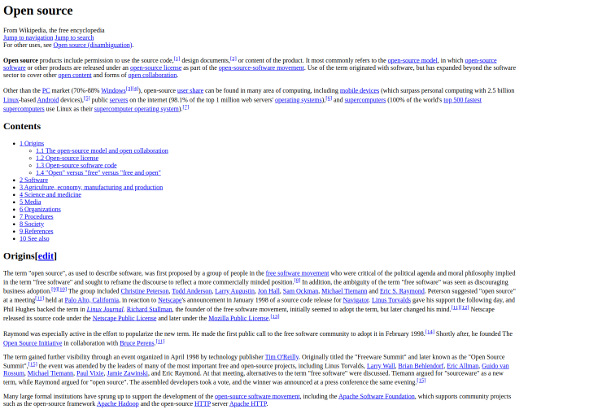
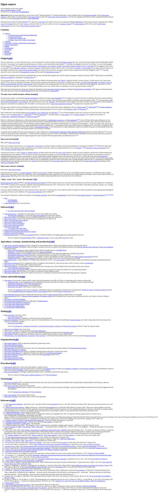

Html Project:
Wikipedia

Project Stats
- Knowledge required: HTML only
- Difficulty: Beginner friendly.
- Estimate project completion tinw: 2 hours
Skill Focus of the project
Some of the HTML skils that you will practice while working on the project are:
- Adding different types of text like heading paragraph, list, links, and superscript to the webpage
- Adding a table of content containing page jump links to content within the page.
- Adding a numbered list of reference, thw source of all wikipedia's information.
Main Components of Wikipedia Webpage
You must include the following parts in your completed project:
- You must include a title or heading on the Wikipedia page.
- You should include a table of content that contains an unordered list of links to sections within the page.
- You included superscript number links that contains a link to the right number on the reference section.
- You should have an ordered list for the reference items containing links to the source of the information.
The final project should look like this:

Bonus Practice
- Create a HTML-only Youtube page clone
- Create a HTML-only Tribute Page
- Create a HTML-only Google Search
- Create a HTML-only Signup form page
Where to publish your Html project
Codepen
Codepen is the easiest one to setup. You just need an account to begin with. Then create a new pen and copy paste your HTML code there.
Github
This one takes a bit more time to setup.
However, you can use the Github.com web based editor to upload or copy paste your HTML.
Then you need to go to the repository setting to enable the projects to be viewed on (your-username).github.io/(repository-name).
If you are still stuck on what to do for your first HTML project, checkout my step by step illustrated guide on how to creat your first HTML web page